Technology
43 no-prep Technology resources with answer keys: reading comprehension, reading trails, and more – filter by grade.
43 resources
Grade

Arch Bridge Reading Comprehension Passages | Physics Scavenger Hunt 7-8

Robot Cleaner Reading Comprehension Passages | Science Scavenger Hunt 3-4

Blacksmith Reading Comprehension Passages | Engineering Scavenger Hunt 3-4

Famous Inventors Reading Comprehension BUNDLE | Cloze & Word Search
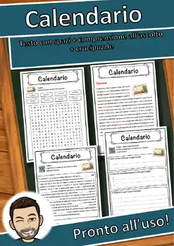
Calendario – Italian Reading: Cloze Text, Listening Task & Word Search (Scheda)
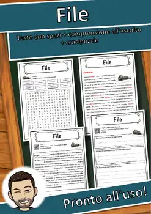
File – Italian Reading: Cloze Text, Listening Task & Word Search (Scheda)
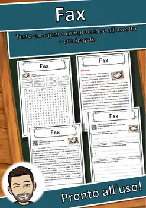
Fax – Italian Reading: Cloze Text, Listening Task & Word Search (Scheda)
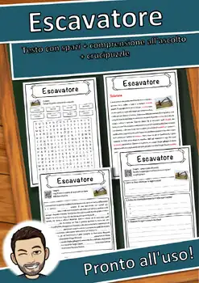
Escavatore – Italian Reading: Cloze Text, Listening Task & Word Search (Scheda)
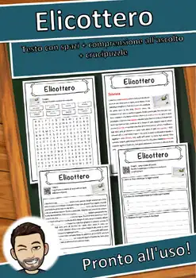
Elicottero – Italian Reading: Cloze Text, Listening Task & Word Search (Scheda)
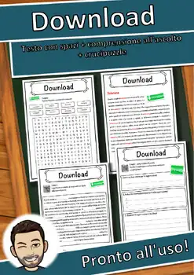
Download – Italian Reading: Cloze Text, Listening Task & Word Search (Scheda)
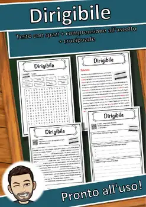
Dirigibile – Italian Reading: Cloze Text, Listening Task & Word Search (Scheda)
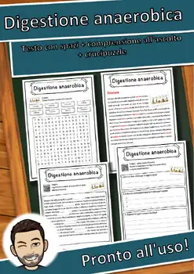
Digestione anaerobica – Italian Reading: Cloze, Listening & Word Search
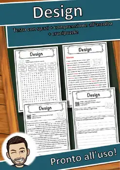
Design – Italian Reading: Cloze Text, Listening Task & Word Search (Scheda)
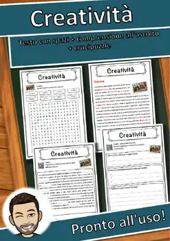
Creatività – Italian Reading: Cloze Text, Listening Task & Word Search (Scheda)
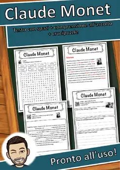
Claude Monet – Italian Reading: Cloze, Listening & Word Search
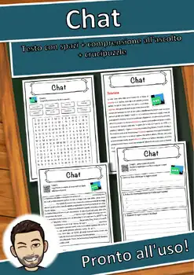
Chat – Italian Reading: Cloze Text, Listening Task & Word Search (Scheda)
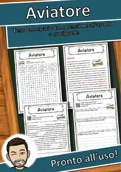
Aviatore – Italian Reading: Cloze Text, Listening Task & Word Search (Scheda)
Autovettura – Italian Reading: Cloze Text, Listening Task & Word Search (Scheda)
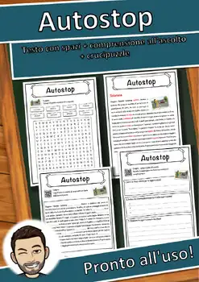
Autostop – Italian Reading: Cloze Text, Listening Task & Word Search (Scheda)
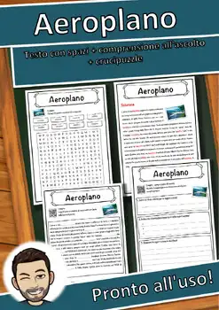
Aeroplano – Italian Reading: Cloze Text, Listening Task & Word Search (Scheda)
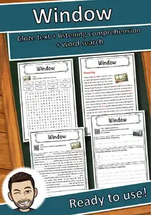
Window – Reading Comprehension: Cloze Text, Listening Task & Word Search
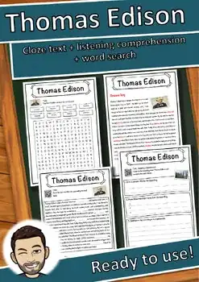
Thomas Edison – Reading Comprehension: Cloze Text, Listening Task & Word Search
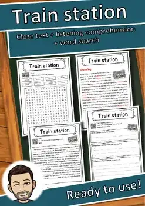
Train station – Reading Comprehension: Cloze Text, Listening Task & Word Search
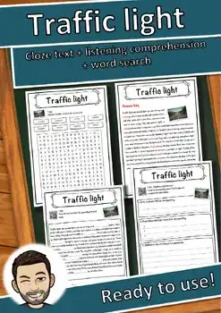
Traffic light – Reading Comprehension: Cloze Text, Listening Task & Word Search
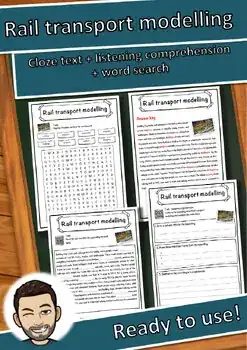
Rail transport modelling – Reading Comprehension: Cloze, Listening & Word Search
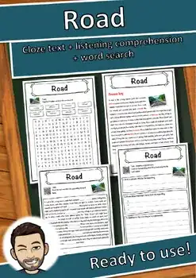
Road – Reading Comprehension: Cloze Text, Listening Task & Word Search
Rapid transit – Reading Comprehension: Cloze Text, Listening Task & Word Search
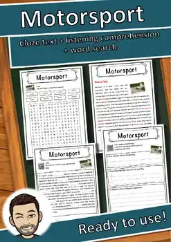
Motorsport – Reading Comprehension: Cloze Text, Listening Task & Word Search
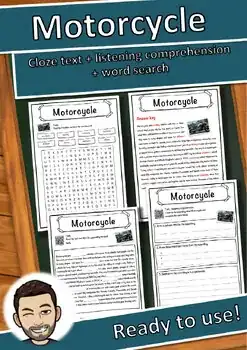
Motorcycle – Reading Comprehension: Cloze Text, Listening Task & Word Search
Global Positioning System – Reading Worksheet: Cloze, Listening & Word Search
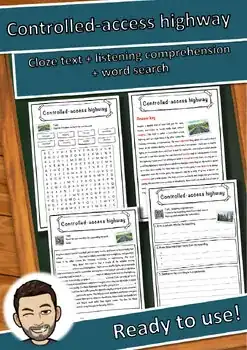
Controlled-access highway – Reading Worksheet: Cloze, Listening & Word Search
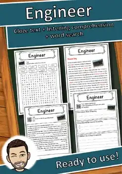
Engineer – Reading Comprehension: Cloze Text, Listening Task & Word Search
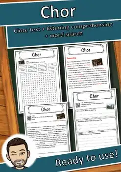
Chor – Reading Comprehension: Cloze Text, Listening Task & Word Search
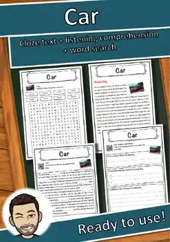
Car – Reading Comprehension: Cloze Text, Listening Task & Word Search
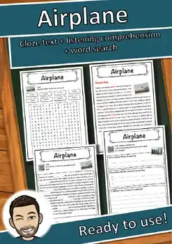
Airplane – Reading Comprehension: Cloze Text, Listening Task & Word Search
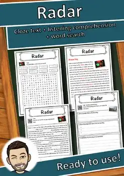
Radar – Reading Comprehension: Cloze Text, Listening Task & Word Search
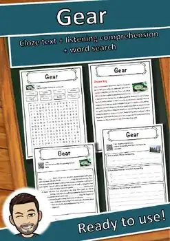
Gear Reading Comprehension Passage & Questions | Cloze + Word Search
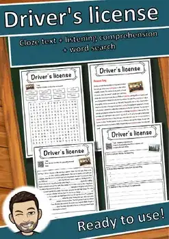
Driver's license – Reading Comprehension: Cloze, Listening & Word Search
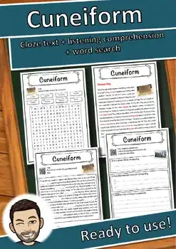
Cuneiform – Reading Comprehension: Cloze Text, Listening Task & Word Search
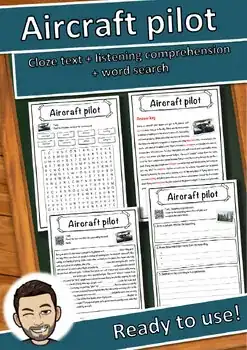
Aircraft pilot – Reading Comprehension: Cloze Text, Listening Task & Word Search
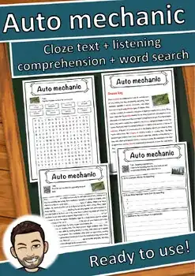
Auto mechanic – Reading Comprehension: Cloze Text, Listening Task & Word Search
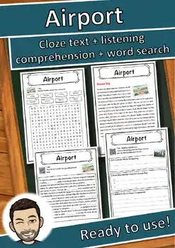
Airport – Reading Comprehension: Cloze Text, Listening Task & Word Search
3D Printing Reading Comprehension Passage & Questions | Cloze + Word Search
No resources found – try a different search term or filter.